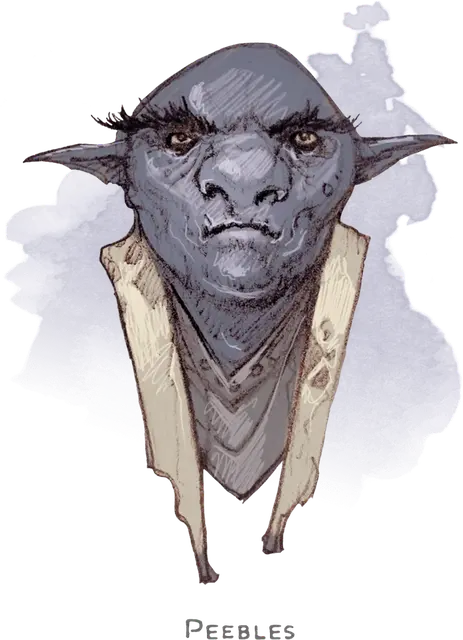

Пиблз
Peebles
Маленький Гуманоид (Гном), нейтрально-добрый, именной НИП

Класс Доспеха 15 (кольчужная рубаха)
Хиты 16 (3к6 + 6)
Скорость 20 футов
| мод | спас | ||
|---|---|---|---|
| СИЛ | 15 | +2 | +2 |
| ЛОВ | 14 | +2 | +2 |
| ТЕЛ | 14 | +2 | +2 |
| мод | спас | ||
|---|---|---|---|
| ИНТ | 12 | +1 | +1 |
| МДР | 10 | +0 | +0 |
| ХАР | 9 | −1 | −1 |
Навыки Восприятие +2, Расследование +3, Скрытность +4
Чувства тёмное зрение 120 футов, пассивное Восприятие 12
Языки Гномий, Подземный, Терран
Опасность 1 (200 опыта)
Бонус мастерства +2
Особенности
Каменный камуфляж. Пиблз совершает с преимуществом проверки Ловкости (Скрытность), когда пытается спрятаться на каменистой местности.
Гномья хитрость. Пиблз совершает с преимуществом спасброски Интеллекта, Мудрости и Харизмы от магии.
Врождённое колдовство. Базовой характеристикой Пиблза является Интеллект (Сл спасброска от заклинания 11). Он может накладывать следующие заклинания, не нуждаясь в материальных компонентах:
• Неограниченно: необнаружимость [nondetection] (только на себя)
• 1/день каждое: глухота/слепота [blindness/deafness], маскировка [disguise self], размытый образ [blur].
Хитрое действие. Пиблз может в каждом своём ходу бонусным действием совершать Засаду, Отход или Рывок.
Скрытая атака (1/ход). Пиблз причиняет дополнительный урон 7 (2к6), если попадает по цели атакой оружием, совершённой с преимуществом к броску атаки, или же если цель находится в пределах 5 футов от дееспособного союзника шпиона, и шпион совершал бросок атаки без помехи.
Действия
Мультиатака. Пиблз совершает две рукопашные атаки.
Короткий меч. Рукопашная атака оружием: +4 к попаданию, досягаемость 5 футов, одна цель. Попадание: Колющий урон 5 (1к6 + 2).
Ручной арбалет. Дальнобойная атака оружием: +4 к попаданию, дистанция 30/120 футов, одна цель. Попадание: Колющий урон 5 (1к6 + 2).